数据库复习合集（PPT）
1 数据和数据库基本概念
数据 信息 知识
1.1 数据
1.1.1 基本概念
数据是一种符号序列，它的内容是事事物特性的反应
数据是计算机能够识别、存储和处理的符号
1.1.2 数据的类型
数据的类型有数字，字母，文字，以及其他特殊字符。图形、图像、声音等多媒体数据也算数据
1.2 信息
信息是经过加工处理的数，是人们消化理解了的数据，是数据的具体含义。
1.2.1 数据与信息的联系
- 数据是信息的载体，数据是信息的外延，
- 信息则是数据的具体含义，信息是数据的内涵。
- 信息是抽象的，不随数据设备决定的数据形式而变化，而信息的数据表现形式却具有可选择性。
1.2.2 信息的分类方式
有用的信息 / 无用的信息
1.3 知识
- 知识是有用的信息
- 知识获取的过程既是从大量、已知信息出发、根据事物之间的固有联系和规律，对信息进行深度加工，提出对人们有价值、有意义的信息。
以下是数据库的基本概念
数据库DB 数据库管理系统DBMS 数据库系统DBS
1.4 数据库
1.4.1 基本概念
数据库是长期储存在计算机内部，有组织的，可共享的大量数据集合。
1.4.2 数据库的特征
- 数据按一定的数据模型组织，描述和存储。
- 可为各种用户共享
- 冗余度较小
- 数据独立性较高
- 易扩展
1.5 数据库管理系统DBMS
1.5.1 DBMS定义
一个能够让用户定义、创建、和维护数据库以及控制对数据库访问的软件系统。
1.5.2 DBMS组成
查询处理器和存储管理器
- 查询处理器主要有四部分： DDL 编译器 、 DML 编译器 、 嵌入式 DML的预编译器及查询运行核心程序；
- 存储管理器主要有四个部分：授权和完整性管理器 、 事务管理器、 文件管理器及缓冲区管理器
1.5.3 DBMS的功能
数据库定义功能
提供数据定义语言 DDL Data Define Language 对各级数据模式
进行精确定义 包括创建模式 schema 数据库 database 、 表
table 、 视图 view 等等。
数据操纵功能
数据库管理系统提供数据操纵语言 DML Data Manipulation Language 可以对数据库中的数据进行追加 、 插入 、 修改 、 删除、 检索等操作 。
数据库运行控制功能
- 提供数据控制语言 DCL Data Control Language 。
- 数据库的恢复 。 在数据库被破坏或数据不正确时 系统有能力把数据库恢复到正确的状态 。
- 数据库的并发控制 。 在多个用户同时对同一个数据进行操作时 系统应能加以控制 防止破坏 DB 中的数据 。
- 数据完整性控制 。 保证数据库中数据及语义的正确性和有效性 防止任何对数据造成错误的操作 。
- 数据安全性控制 。 防止未经授权的用户存取数据库中的数据以避免数据的泄露 、 更改或破坏 。
数据库的维护功能
- 包括数据库的初始数据的载入、转换功能、数据库的转储功能、数据库的重组织功能和性质监视、分析功能等。
- 这些功能大都由各个实用程序来完成。例如装配程序（装配数据库）、重组程序（重新组织数据库）、日志程序（用于更新操作和数据库的恢复）、统计分析程序等。
数据字典
- 数据字典 (Data Dictionary ，记为 DD) 。 DD 中存放着数据库三级结构的描述。对于数据库的操作都要通过查阅 DD 进行。
- 现在有的大型系统中，把 DD 单独抽出来自成一个系统，成为一个软件工具，使得 DD 成为一个比 DBMS 更高级的用户和数据库之间的接口。
1.6 数据库系统
1.6.1 定义
数据库系统（ Database System ，简称 DBS ）是指在计算机系统中引入数据库后的系统构成。
1.6.2 组成
- 硬件系统
- 数据库集合
- 数据库管理系统及相关软件
- 数据库管理员
- 用户
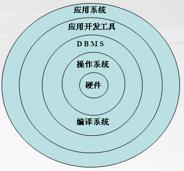
硬件系统
运行数据库系统的计算机需要有足够大的内存、足够大容量的磁盘等联机直接存取设备和较高的通道能力，以及支持对外存的频繁访问，
还需要足够数量的脱机存储介质，如软盘、光盘、磁带等存放数据库的备份。
数据库集合
系统包含若干个设计合理、满足应用需要的数据库
数据库管理系统及相关软件
- 数据库管理系统（ DBMS ）是为数据库建立、使用和维护而配置的软件是数据库系统的核心组成部分。
- 为满足自描述的需求， DBMS 还要存储元数据，也就是关于数据的数据。
- 此外支持数据库管理系统运行的操作系统、系统开发软件都是系统软件的组成。
数据库管理员
- 数据库管理系统一般需要专人来对数据库进行管理，这个人称为数据库管理员 DBA 。
- 数据库管理员负责数据库系统建立、维护和管理
用户
- 一类是最终用户，主要对数据库进行联机查询或通过数据库应用系统提供的界面来使用数据库，这些界面包括菜单、表格、图形和报表；
- 另一类是专业用户，即应用程序员，他们负责设计应用系统的程序模块，对数据库进行操作。
总而言之DBS包括DBMS，也包括DB
2 数据管理技术
2.1 数据库管理技术面临挑战
- 信息爆炸可能产生大量垃圾
- 数据类型的多样化和一体化要求
- 当前的数据管理还不能处理不确定或不精确的模糊信息
- 数据库安全
- 对数据库理解和知识获取的要求
2.2 数据管理技术的三个发展阶段
- 人工管理阶段
- 文件系统管理阶段
- 数据库系统管理阶段
2.2.1 人工管理阶段
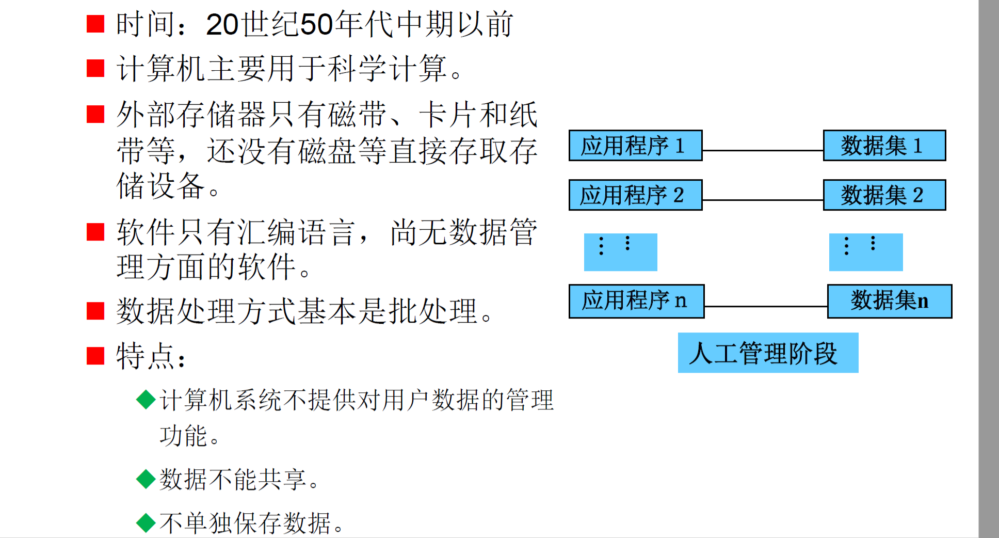
2.2.2 文件系统管理阶段
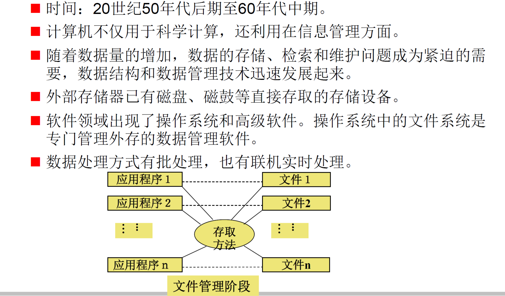
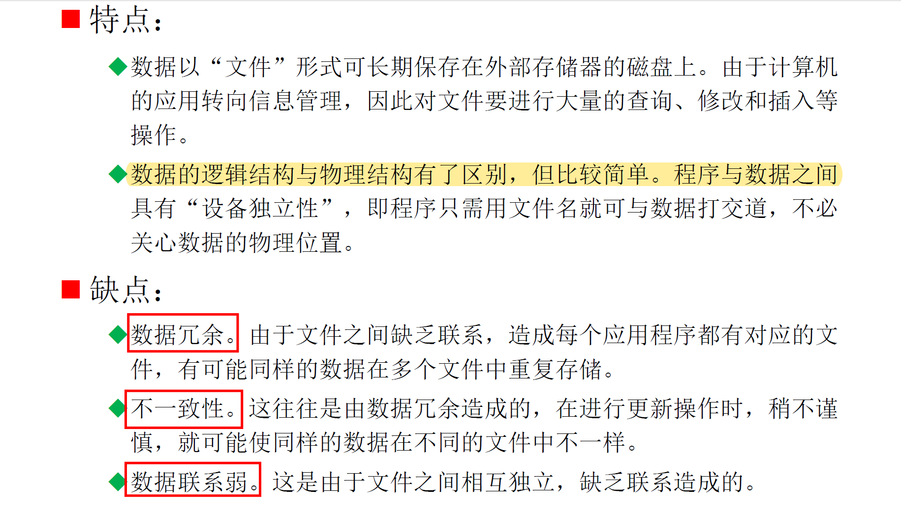
2.2.3 数据库系统
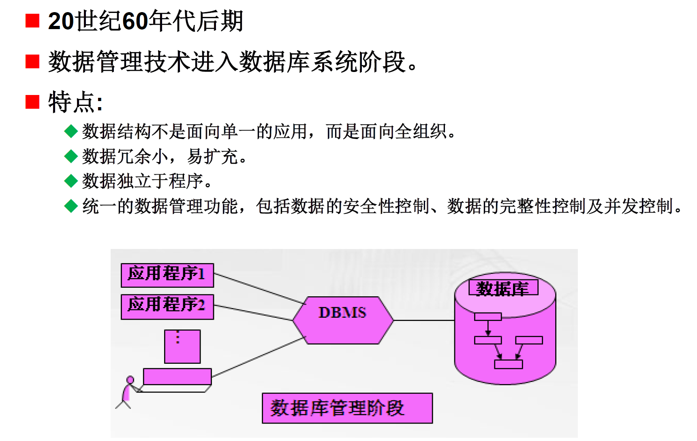
2.2.4 数据管理的发展阶段特点对比
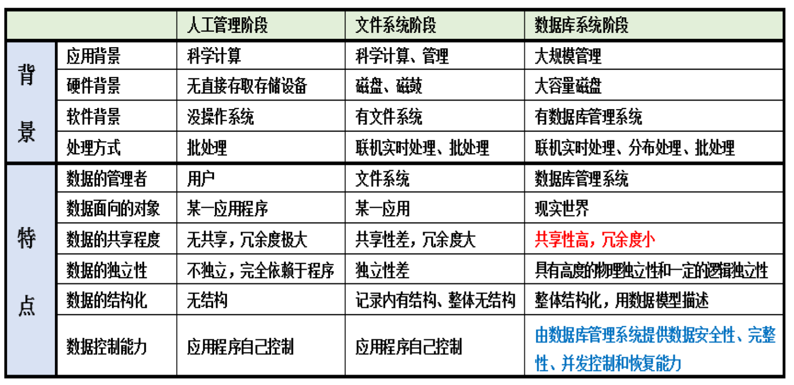
3 数据模式
3.1 模式（Schema）
- 数据库逻辑结构和特征的描述
- 反应的是数据的结构及其联系
- 模式是相对稳定的
3.2 实例（Instance）
- 模式的一个具体值
- 反应数据库某一时刻的状态
- 同一个模式可以有很多实例
- 实例随数据库中的数据的更新而变动
3.3 三层模式体系结构
- 内模式
- 概念模式（模式）
- 外模式
3.3.1 概念模式（模式或称逻辑模式）
- 数据库中全体数据的逻辑结构和特征的描述
- 所有用户的公共数据视图，综合了所有用户的需求
- 一个数据库只有一个模式
3.3.2 模式的地位：是数据库系统模式结构的中间层
- 与数据的物理存储细节和硬件环境无关
- 与具体的应用程序、开发工具及高级程序设计语言无关
3.3.3 模式的定义
- 数据的逻辑结构（数据项的名字，类型，取值范围等）
- 数据之间的联系
- 数据有关的安全性、完整性要求
- DBMS提供数据定义语言DDL来描述逻辑模式
- 表结构的定义
3.3.4 外模式（也称子模式，用户模式，视图）
- 数据库用户（包括应用程序员和最终用户）使用的局部数据的逻辑结构和特征的描述；
- 不同用户需求不同，看待数据的方式也可以不同，对数据保密的要求也可以不同，使用的程序设计语言也可以不同，因此不同用户的外模式的描述可以是不同的。
- 数据库用户的数据视图，是模式的子集或变形，与某一应用有关的数据的逻辑表示
- SQL定义的视图
3.3.5 外模式的地位：介于模式与应用之间
- 模式与外模式的关系：一对多
- 外模式通常都是模式的子集
- 一个数据库可以有多个外模式。反映了不同的用户的应用需求、看待数据的方式、对数据保密的要求
- 对模式中同一数据，在外模式中的结构、类型、长度、保密级别等都可以不同
- 外模式与应用的关系：一对多
- 同一外模式也可以为某一用户的多个应用程序所使用
- 但一个应用程序只能使用一个外模式
3.3.6 外模式的用途
保证数据库安全性的一个有力措施。每个用户只能看见和访问所对应的外模式中的数据
3.3.7 内模式
- 是数据物理结构和存储方式的描述
- 是数据在数据库内部的表示方式
- 记录存储的方式（eg:顺序存储）
- 索引的组织方式
- 数据是否压缩存储
- 数据是否加密
- 数据存储记录结构的规定
- 要修改存储数据库的结构（例如，用倒排文件代替多链表），那么仅仅需要把这些修改反映在存储模式中；
一个数据库只有一个内模式
3.4 三级模式的特点比较
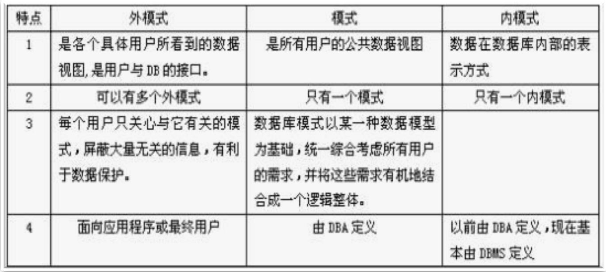
3.5 外模式/模式映射（逻辑独立性）
定义外模式与模式之间的对应关系，每一个外模式都对应一个外模式／模式映象，映象定义通常包含在各自外模式的描述中
这样就保证了数据的逻辑独立性
3.6 模式/内模式映射（物理独立性）
- 模式／内模式映象定义了数据全局逻辑结构与存储结构之间的对应关系例如，说明逻辑记录和字段在内部是如何表示的
- 数据库中模式／内模式映象是唯一的
- 该映象定义通常包含在模式描述中
这样就保证了数据的物理独立性
3.7 两级独立性的总结
3.7.1 逻辑数据独立性
逻辑数据独立性是指外部模式不受概念模式变化影响。
3.7.2 物理数据独立性
物理数据独立性是指概念模式不受内部模式变化的影响。对用户来讲，唯一要注意的是对性能的影响。实际上，性能变坏是改变内部模式
最常见的原因。
4 数据模型
在数据库中使用数据模型这个工具来抽象，表示和处理现实世界中的数据和信息，通俗的讲数据模型就是现实世界的模型
4.1 数据模型应满足的需求
- 能够比较真实的模拟现实世界
- 容易为人所理解
- 便于在计算机上实现
4.2 两步抽象
- 现实世界中的客观对象抽象为概念模型
- 把概念模型转化为某一DBMS支持的数据模型
概念模型是现实世界到机器世界的一个中间层次。
4.3 数据模型的不同层次
- 概念模型
- 逻辑模型
- 物理模型
4.3.1 概念数据模型（ Conceptual Data Model CDM）
- 面向现实世界建模
- 主要用来描述现实世界的概念化结构，与具体的 DBMS 无关
- CDM 只关心现实世界中的事物、事务特征、联系，完全没有与具体及其相关的任何概念；
- CDM 是系统分析员、程序设计员、维护人员、用户之间相互理解的共同语言；
- CDM 能时数据库的设计人员在设计的初始阶段摆脱计算机系统及DBMS 的具体技术问题，集中精力分析数据、数据之间的联系；
- 概念模型必须转换成逻辑模型，才能在 DBMS 中实现；
- 最常用的概念模型表达工具是 E-R 模型
4.3.2 逻辑数据模型（ Logical Data Model LDM）
- 面向用户建模
- 用户从数据库所看到的数据模型
- 是具体的DBMS所支持的数据模型（网状/层次/关系/面向对象）
- 既要面向用户，也要面向系统；
- LDM 表示数据间联系的方法
- 一般的 DBMS 支持一种 LDM （特殊的 DBMS 支持多种 LDM
4.3.3 物理数据模型（Physical Data Model PDM）
- 面向具体的 DBMS ，也面向机器
- 描述数据在存储介质上的组织结构
4.4 数据模型三要素
- 数据结构
- 数据操作
- 数据的约束条件
4.4.1 数据结构
- 与数据类型、内容、性质有关的对象，如关系模型中的域、属性、关系等
- 与数据之间联系有关的对象
- 数据结构是对系统 静态特征 的描述。
4.4.2 数据操作
- 数据操作是指对数据库中各种对象的实例允许执行的操作的集合，包括操作及有关的操作规则。
- 数据库主要有检索和更新（包括插入、删除、修改）两大类操作。
- 数据模型必须定义这些操作的确切含义、操作符号、操作规则（如优先级）及实现操作的语言。
- 数据操作是对系统 动态特性 的描述。
4.4.3 约束条件
简单来说就是约束数据的取值范围的，防止取到非法值
数据约束条件是一组完整性规则的集合
4.5 逻辑数据模型类型
4.5.1 层次模型
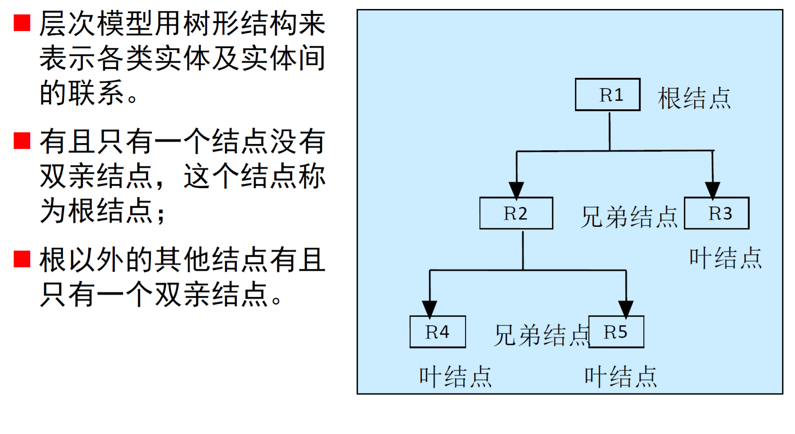
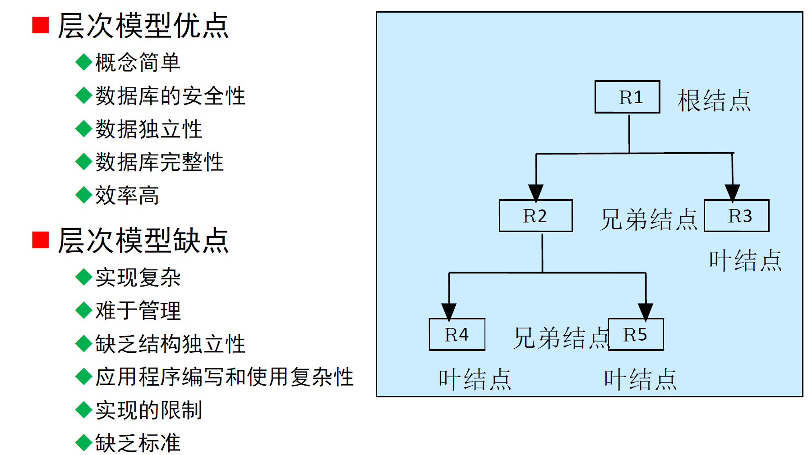
4.5.2 网状模型
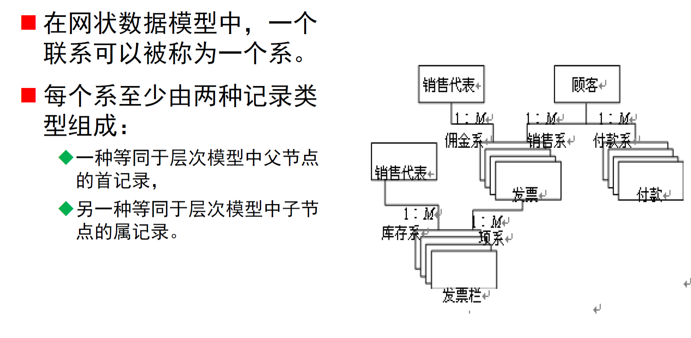
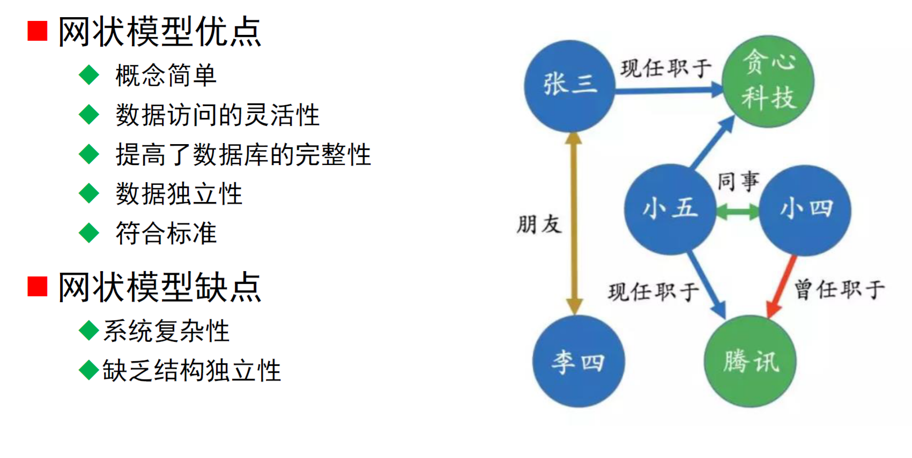
4.5.3 关系模型
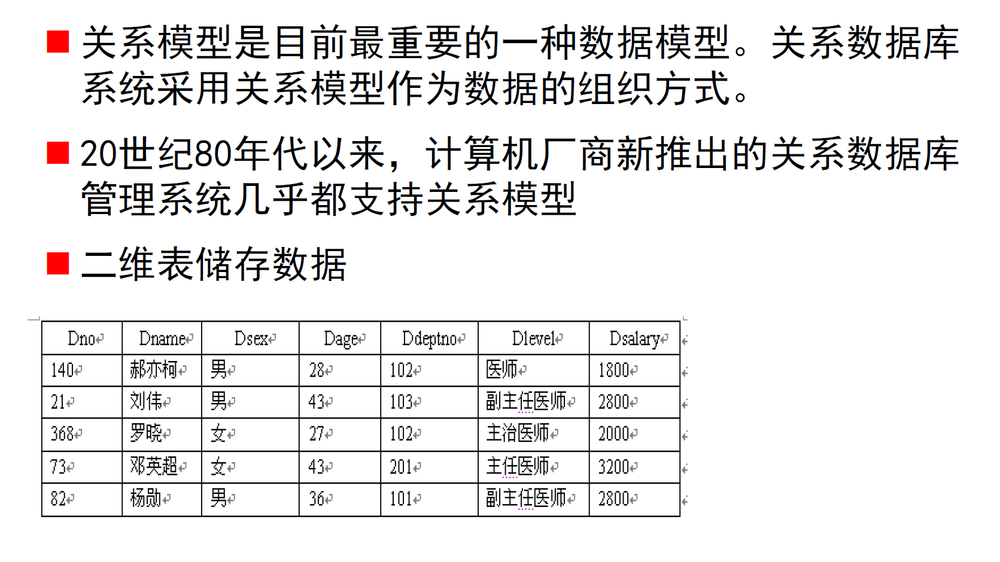
4.5.4 面向对象模型
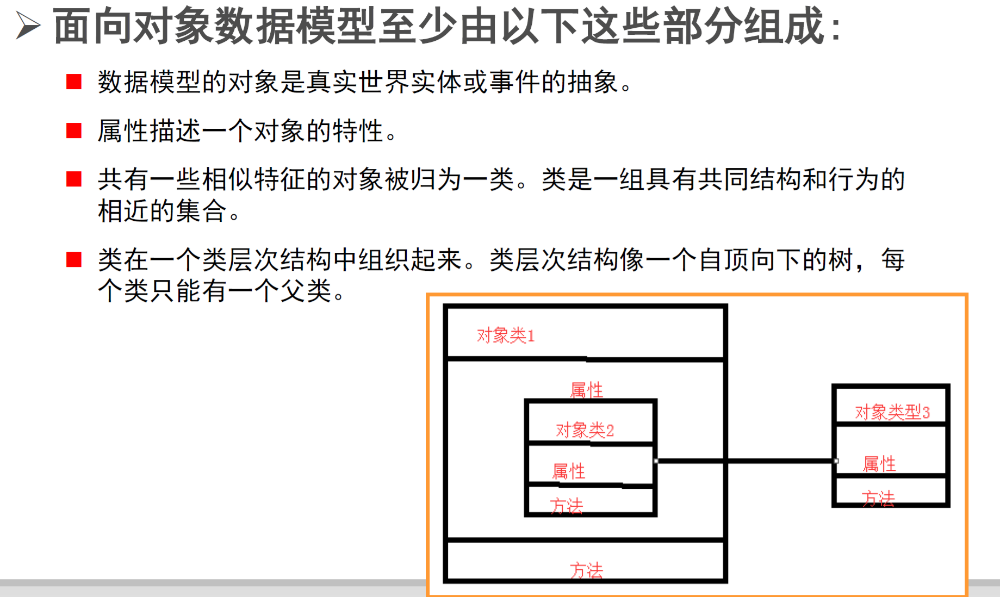
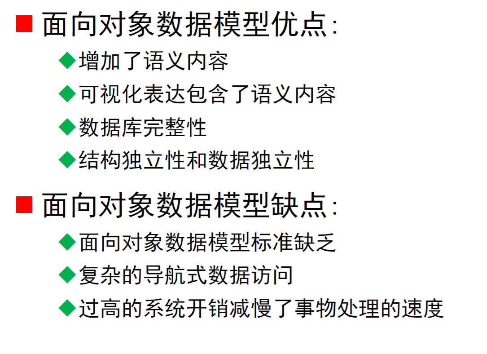
5 数据库体系结构
5.1 数据库架构
- 从单机架构到多机架构（分布式）
- 从集中式到共享存储
5.2 单机架构
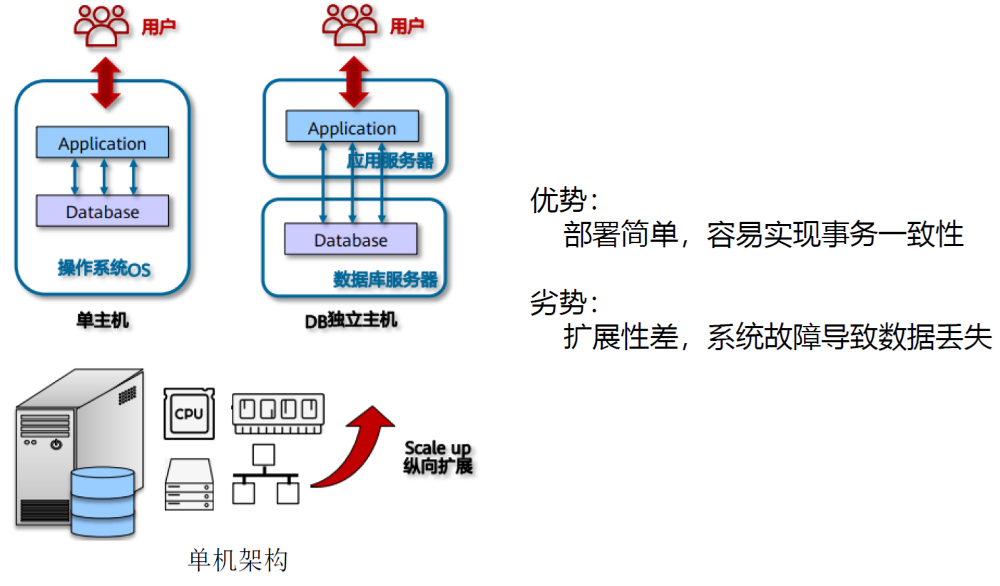
5.3 主备架构
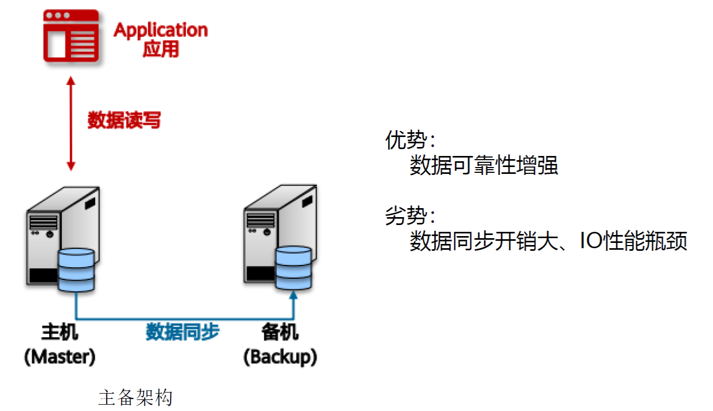
5.4 主从架构
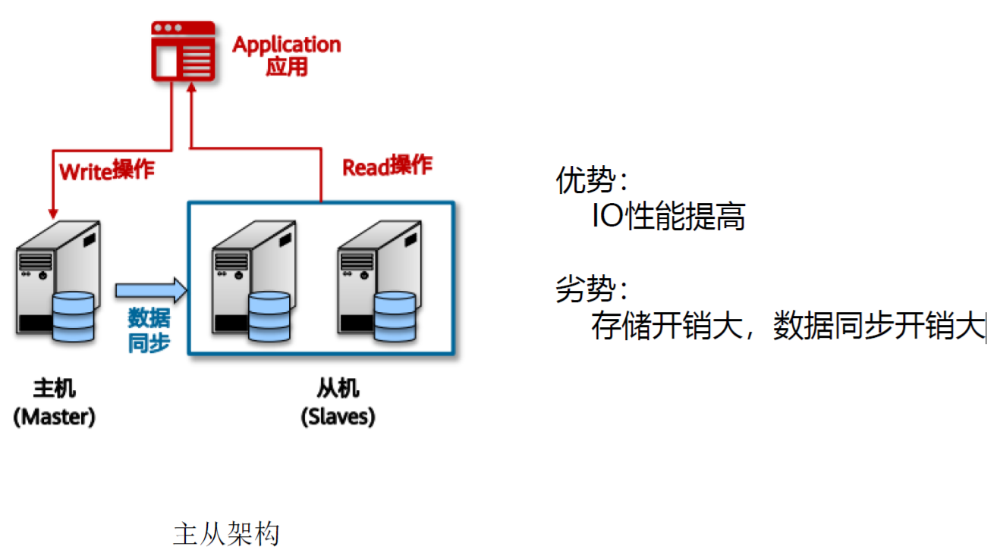
5.5 多主架构
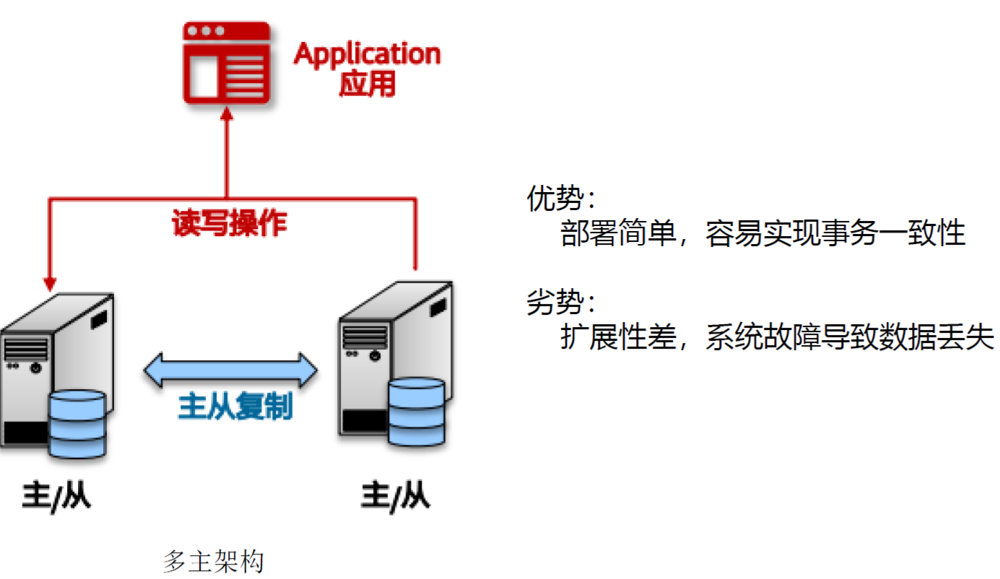
5.6 Share-nothing
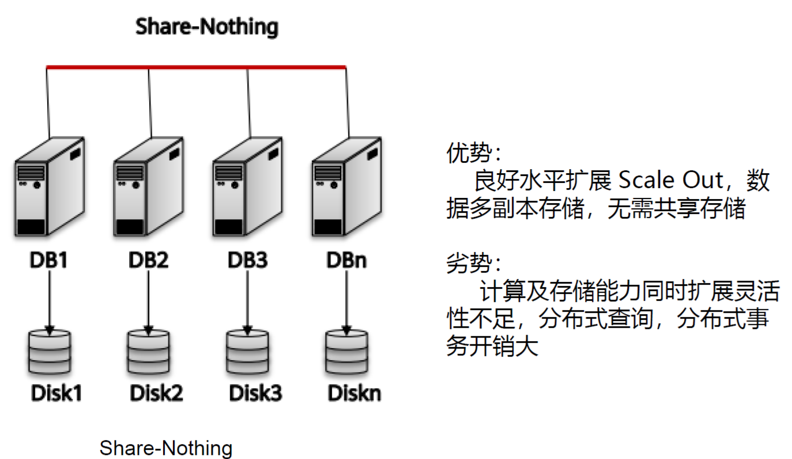
5.7 Share-disk
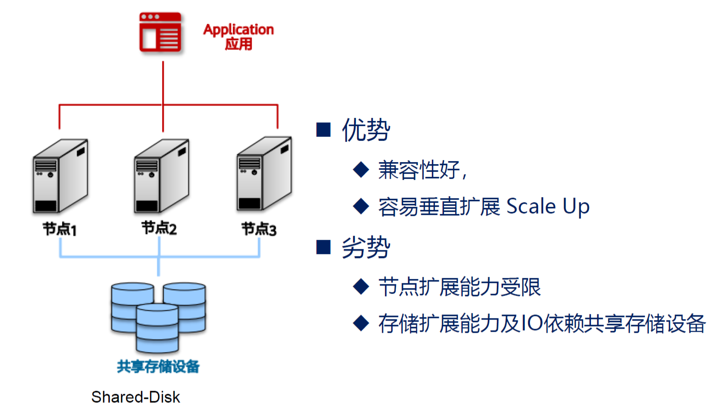
6 国产数据库发展历程
仅作了解即可
7 关系数学基础
8 关系
- 关系模式
- 关系实例
8.1 关系实例
- 关系实例是由命名的若干列和行组成的表格。一般情况下，关系指代实例。
- 关系中的行称为元组，类似于文件中的记录，但与文件记录的不同之处是，所有的元组的列数相同，并且一个关系中不存在两个相同的元组。
- 关系实例中元组的数目称为基数（ Cardinality ）。
- 在关系模型中，关系中的列一般都应该被命名。由于关系是元组的集合，所以元组的次序是无关紧要的。
8.2 关系模式
应当包含以下组成部分
- 关系名
- 关系中的属性的名字及相关联的域名，以及约束
- 关系模式的表示方法 R(U,D,DOM,F) 或 R(U,F) 或 R(U)
-
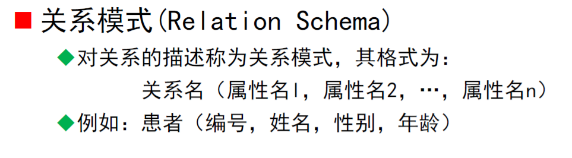
关系必须是规范化的，满足一定的规范条件
最基本的规范条件（第一范式， 1NF ）：关系的每一个分量必须是一个不可分的数据项，即不能表中有表。
8.3 关系数据库
- 关系数据库是 关系 的有限集合。
- 因为关系由两部分组成，所以关系数据库也是由两部分组成，即关系模式的集合及对应的关系实例的集合。
- 关系模式的集合称为数据库模式，对应的关系实例的集合称为数据库实例。
8.4 基本术语：关系
关系是笛卡尔积 的一个有意义的子集，一个关系就是一张二维表，通常将一个没有重复行、重复列的二维表看成一个关系。每个关系都有一个关系名。
二维表存放着两类关系：
- 实体本身的数据
- 实体之间的联系
8.4.1 元组
表中的一行 表示一个实体，关系是由元组组成的。
8.4.2 属性
表中的每一列在关系中称为属性，每个属性都有一个属性名，属性值则是各元组属性的取值。例如，属性：“ Pno” Pname” Psex”” Pid” 。
8.4.3 域
属性的取值范围称为域。同一属性只能在相同域中取值。例如，性别属性“ Psex” 的域为“男”和“女”
8.4.4 分量
元组中的一个属性值。
8.4.5 键（IMPORTANT）
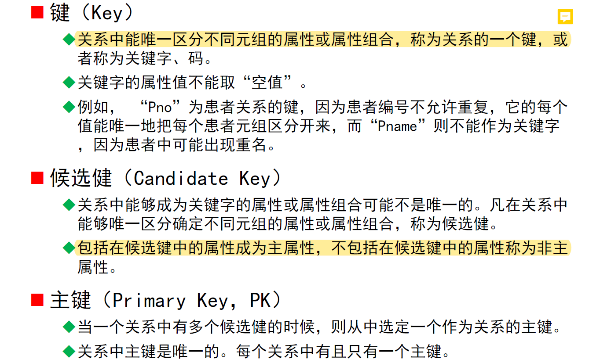
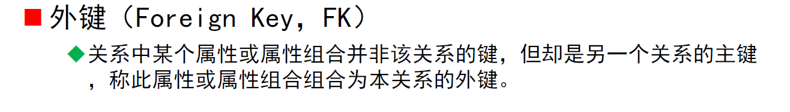
有且只有一个主键！！！！！！！
码，字
8.5 关系操作
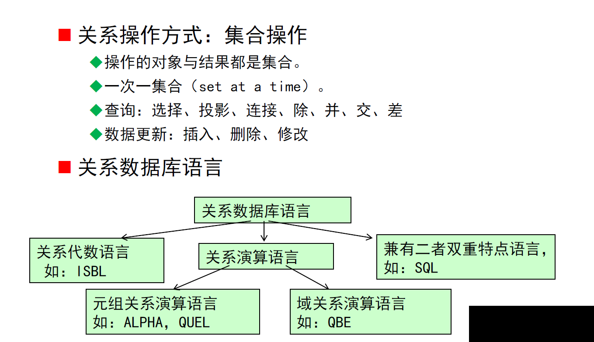
8.6 数据约束
- 关系模型的完整性规则是对关系的某种约束条件，保证数据库中数据的正确性和一致性
- 三类完整性约束
- 实体完整性：主码不能取空值
- 参照完整性：外码取值必须为： 1 ）取空值 2 ）被参照关系表中某个元组的主码值
- 用户定义的完整性：各类商业规则
- 实体完整性和参照完整性是关系模型必须满足的完整性约束条件，被称作是关系的两个不变性，应该由关系系统自动支持。
8.7 关系数据模型的优缺点
8.7.1 优点
- 关系模型与非关系模型不同，它是建立在严格的数学概念的基础上的。
- 数据结构简单、清晰。
- 更高的数据独立性，更好的安全保密性。
- 丰富的完整性。
8.7.2 缺点
- 对“现实世界”实体的表达能力弱。
- 由于存取路径对用户透明，查询效率往往不如非关系数据模型。
- 关系模型只有一些固定的操作集。
- 不能很好的支持业务规则。
9 数据库设计概述
数据库设计：根据用户需求研制数据库结构的过程
9.1 数据库的结构设计
- 根据给定的应用环境，进行数据库的**模式或子模式（外模式）**的设计
- 它包括数据库的概念设计，逻辑设计和物理设计
- 数据库模式是各应用程序共享的结构，是静态的、稳定的，一经形成后通常情况下是不容易改变的，所以结构设计又称为静态模型设计
9.2 数据库的行为设计
- 确定数据库用户的行为和动作
- 在数据库系统中，用户的行为和动作是指用户对数据库的操作，这些要通过应用程序来实现，所以数据库的行为设计就是应用程序的设计
- 用户的行为总使数据库的内容发生变化，所以行为设计是动态的，行为设计又称为动态模型设计。
9.3 数据库设计的目标
为用户和各种应用系统提供一个 信息基础设施 和 高效率的运行环境 。
9.3.1 高效率的运行环境
- 数据库数据的存取效率高
- 数据库存储空间的利用率高
- 数据库系统运行管理的效率高
9.4 设计方法
9.4.1 直观设计方法（手工试凑法）
- 依赖于设计者的经验和技巧，设计质量难以保证。
9.4.2 新奥尔良设计方法
- 运行软件工程的思想和方法，提出了数据库设计的规范
- 新奥尔良法将数据库设计分成：需求分析、概念设计、逻辑设计和物理设计
9.4.3 基于实体-关系（E-R）模型的数据库设计方法
- 在需求分析的基础上，用E-R图构造一个反应现实世界实体之间联系的企业模式转换成基于某一特定的DBMS的概念模式
9.4.4 3NF设计方法
在需求分析的基础上，确定数据库模式中的全部属性和属性间的依赖关系，将它们组织在一个单一的关系模式中，然后再分析模式中不符合 3NF 的约束条件，将其进行投影分解，规范成若干个 3NF 关系模式的集合。
9.4.5 面向对象的数据库设计方法（ODL）
使用面向对象的概念和术语来描述和完成数据库的结构设计，并可方便地转换为面向对象的数据库。
9.4.6 用于数据库设计的计算机辅助软件工具 (CASE）
- SYSBASE 公司的 PowerDesigner 、 Oracle 公司的 Design 2000 、 CA 公司的 ERWin 、 Rational 公司的 Rational Rose 、 Microsoft 公司的 Visio。
9.5 设计过程
- 需求分析阶段
- 概念设计阶段
- 逻辑设计阶段
- 物理设计阶段
- 实现阶段
- 运行和维护阶段
9.6 概念设计的目标
概念设计的目标是生成能够准确反映用户组织和使用信息需求的抽象信息结构，即 概念模型 。
- 能真实，充分地反映现实世界
- 易于理解
- 易于更改
- 易于转换
最常用的描述概念的模型是E-R模型
10 E-R模型
- 面向问题的概念模型，只关心现实世界中的事物，事物特征、联系
- 用简单的图形方式（E-R图）描述现实世界中的数据，系统分析员，程序设计员，维护人员，用户之间的共同语言
- E-R 图不涉及数据在数据库中的表示和存取方法， 使设计人员在初期集中精力分析数据、数据之间的联系，屏蔽底层技术问题
- 非常接近人的思维方式
- 数据库设计过程中，通常使用 E-R 模型图作为概念设计的描述工具进行设计，后期会学习。
实体用方框，联系用菱形，属性用圆形
10.1 两个实体之间的联系
一对一，一对多，多对一，多对多
10.2 简单属性和复合属性
- 简单属性是不可再分的属性（原子属性）
- 复合属性是可以再划分为更小的部分（即属性可以嵌套）
10.3 单值属性和多值属性
- 单值属性是指同一实体的属性只能取一个值
- 多值属性是指同一个实体的某些属性可能对应一组值
- 多值属性用双椭圆形表示
- 例如：具有多个电话号码的患者实体表示
多值属性的变化一般那就是分解，或者说再抽象出来一个弱实体（用双线矩形框表示）与弱实体相关的联系用双菱形表示。
10.4 派生属性
- 通过具有相互依赖的属性推导出来的属性称为派生属性
- 派生属性用虚线椭圆形与实体相连。
10.5 空值属性
- 当实体在某个属性上没有值时应该使用空值
- 空值属性不同于空格取值
- 例如，新应聘到医院的医生尚未分配岗位，则该医生的所属科室的属性值应该为空值 Null ，表示未知或无意义
支持附加语义概念的 E R 模型也称为增强的实体联系（Enhanced Entity Relationship EER ）模型
10.6 超类和子类
PPT 175
11 概念设计
11.1 设计方法
- 自底向上
- 数据的抽象
- 视图的集成
- 对生成的概念模式进行评审
- 自顶向下
- 逐步扩张
11.2 设计步骤
- 数据的抽象
- 分类
- 聚集
- 概括
- 视图的集成
- 对生成的概念模式进行评审
概念设计不是单纯的确定关系模式
12 逻辑设计和物理设计
逻辑结构设计的任务就是为概念结构设计阶段生成的 全局 E R 视图转换为特定 DBMS 产品所能支持的数据模型。
12.1 E-R模式向关系模型的转换
就是要确定如何将E-R中的3个基本要素转化为关系模式集合的表示
12.1.1 实体转换规则
将一个实体转换为一个关系模式，实体的属性就是关系的属性，而实体的键就是关系的键。
12.1.2 关系转换规则
实体之间的联系转换为关系模式，联系的属性直接转换为关系的属性
12.2 逻辑设计和模式优化
- 确定范式的使用
- 实施规范化
- 反范式设计
12.3 物理设计
- 存储结构的设计
- 存取方法的设计
- 物理结构的评价
12.4 实施维护
- 实际数据库结构的建立
- 加载数据
- 应用程序开发和调试
- 数据库试运行
- 数据库的备份和恢复
- 数据库的完整性和安全性
- 数据库性能满足既定的要求
- 数据库的重组和重构
13 关系模式设计问题
关系模式的简化三元组表示
14 函数依赖
函数依赖一般都指非平凡依赖
注意区分完全函数依赖和部分函数依赖
注意区分直接依赖和传递依赖
逻辑蕴含
Armstrong公理
最小依赖集
计算函数依赖集F的最小依赖集G，步骤如下
- 根据推理规则的分解性，得到一个和F等价的FD集G，G中每个FD的右边均为单属性
- 在G中的每个FD中消除左边冗余的属性
- 在G中消除冗余的FD
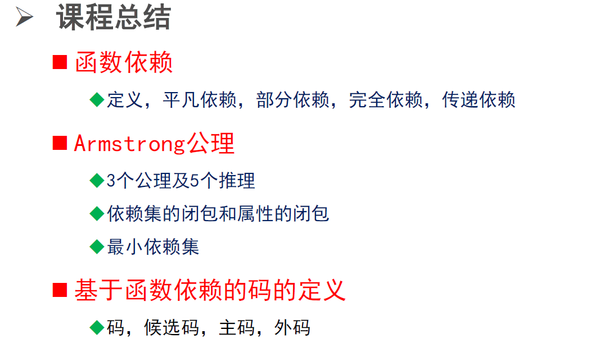
15 模式分解
- 函数依赖可以引起的数据冗余和更新异常等问题，对关系模式进行分析，使之表达的语义概念单纯化。
- 关系模式R的分解就是用两个或两个以上的关系来替换R，分解后的关系模式的属性集都是R中属性的子集，其并集与R的属性集相同。
- 模式分解帮助消除不良设计中的一些问题，如冗余、不一致或更新异常。
模式分解中的问题主要有两个
15.1 无损分解
一个关系表被分解成两个或两个以上的小表，通过连接被分解后的小表可以获得原始表的内容，则称为无损连接分解。
-
无损分解的测试算法——追逐法
chase是一个普遍的算法，无论一个关系模式分解成多少个关系模式，都可以用此算法进行检验。
-
如果一个关系模式一分为二，可以简化检验
比如分解成和则是无损分解的充分必要条件是：
- 所有模式的分解必须是无损的
- 无损连接分解总是关于特定函数依赖集F定义的
15.2 保持依赖
如果分解不能保持函数依赖，那么数据的语义就会出现混乱
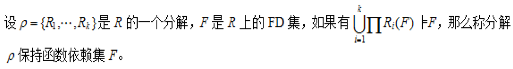
15.3 模式等价
- 关系模式分解的两个特性实际上涉及两个数据库模式的等价问题，这种等价包括数据等价和依赖等价两个方面
- 数据等价是指两个数据库实例应表示同样的信息内容，用“无损分解”衡量。如果是无损分解，那么对关系反复的投影和连接都不会丢失信息。
- 依赖等价是指两个数据库模式应有相同的依赖集闭包。在依赖集闭包相等情况下，数据的语义是不会出错的。
- 但是要同时达到无损分解和保持函数依赖的分解也不是一件容易的事情，需要认真对待。
15.4 总结
- 模式分解能消除数据冗余和操作异常现象
- 但是分解以后，检索操作需要做笛卡尔积或连接操作，这将付出事件代价。
- 一般认为，为了消除冗余和异常现象，对模式进行分解是值得的。
16 规范化
16.1 范式
- 范式是一种关系的状态，也是衡量关系模式好坏的标准
- 范式的种类与数据依赖有着直接的联系。在关系模式中存在函数依赖时就有可能存在数据冗余，引出数据操作异常现象。
- 范式可以用于确保数据库模式中没有各种类型的异常和不一致性。为了确定一个特定关系是否符合范式要求，需要检查关系中属性间的函数依赖，而不是检查关系中的当前实例。
16.2 规范化概述
- 一个规范化的模式有最小的数据冗余，它要求除了与元组进行连接的 外键 （在另一个关系中是主键的属性组之外，数据库实例中的其他属性的值都不能被复制
- 规范化主要作为验证和改进逻辑数据库设计的工具，使得逻辑设计能够 满足特定约束 并 避免不必要的数据重复
16.3 1NF
- 定义：在关系模式 R 的每个关系实例 r 中，如果每个属性值都是不可再分的原子值，那么称 R 是第一范式（1NF ）的模式。
- 1NF 不允许每个元组的每个属性对应一组值、一行值或两个值的组合。简单地说， 1NF 中不允许出现“表中有表”的现象。
- 1NF 是关系模式应具有的最起码的条件。满足 1NF 的关系称为规范化的关系；否则称为非规范化的关系。关系数据库研究的关系都是规范化的关系。
16.4 2NF
- 主要是处理部分依赖的问题
- 2NF 定义： 如果关系模式 R 1NF ，且每个 非主属性（不是组成候选码的属性） 完全函数依赖 于 候选码 ，那么称 R 属于 2NF 的模式。
- 2NF 是基于完全函数依赖的，只有在 候选码是复合属性 下才可能不符合 2NF
16.4.1 2NF分解算法
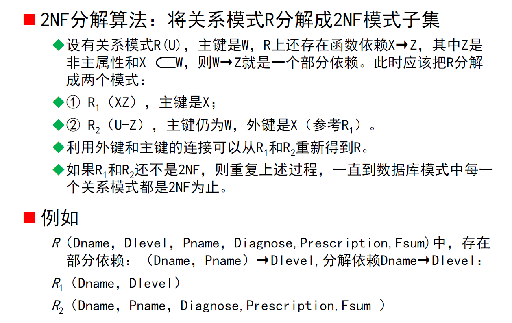
16.5 3NF
- 如果关系模式中存在传递函数依赖，也可能出现数据冗余和操作异常现象。因此，还需要对这样的关系模式进行分解，以排除传递函数依赖，使模式达到 3NF的标准。
- 定义：如果关系模式 R 1NF ，且每个 非主属性 都 不传递依赖 于 R 的候选码，那么称 R 属于 3NF 的模式。
- 在3NF中，关系模式是由主键和一组相互独立的非主属性组成的，它满足两个条件
- （1）R中的非主属性相互独立
- （2）R中的非主属性函数依赖于主键
16.5.1 3NF分解算法
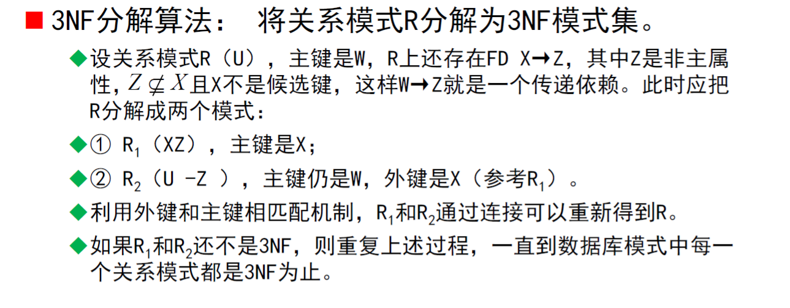
16.6 BCNF
在3NF模式中，并未排除主属性对候选键的传递依赖，因此有必要提出更高一级的范式。
定义：如果关系模式 R 1NF ，且每个属性都不传递依赖于 R 的候选码，那么称 R 是 BCNF 的模式。
由BCNF的定义可以得到以下结论，一个满足BCNF的关系模式有：
- 所有非主属性对每一个码都是完全函数依赖
- 所有的主属性对每一个不包含它的码，也是完全函数依赖。
- 没有任何属性完全函数依赖于非码的任何一组属性
17 关系代数集合运算
18 关系代数选择投影连接
19 关系代数除法
20 SQL简述
21 数据表的创建删除与修改
22 简单查询
23 统计查询
24 连接查询
25 嵌套查询
26 集合查询
27 数据更新
28 视图
28.1 特点
- 虚表
- 只存放视图的定义，不会出现数据冗余
- 基表中的数据发生变化，视图中查询出的数据也随之改变
- 视图建立后，用户可以对视图进行数据查询，有些甚至可以对视图进行插入，修改操作。
28.2 优点
- 限制用户直接存取基表的某些列或记录，从而为基表带来附加的安全性。
- 视图可定义在多个基表上或其他视图上，可以隐藏数据的复杂性。
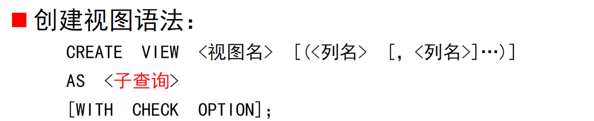
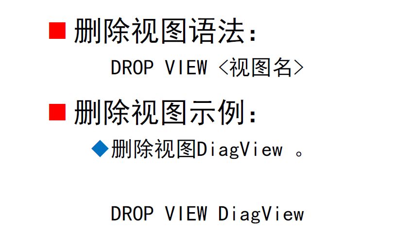
28.3 更新视图
对视图的更新最终是对基表的更新
- SQL标准规定，只能对直接定义在一个基表上的视图及逆行插入、修改、删除等更新操作，对定义在多个基表或其他视图之上的视图，数据库管理系统不允许进行更新操作。
- 若视图数据之来源于一个基表，如果查询语句有GROUPBY DISTINCT或聚集函数等，只可执行删除操作，插入和修改操作都不可以被执行。
- 如果视图中包含由表达式计算的列，则不允许进行更新操作。
- 例如：在药品信息表中，假如为药品单价提高15%后建立的药品价格视图，
则不能修改该视图中的药品单价。
- 例如：在药品信息表中，假如为药品单价提高15%后建立的药品价格视图，
28.4 视图的作用
- 视图能够简化用户的操作
- 视图使用户能以多种角度看待同一数据
- 视图能够对机密数据提供安全保护
- 利用视图可以清晰地表达查询
29 索引
29.1 概念
- 类似于词典的索引,索引是关于数据位置信息的关键字表。
- 数据库中的索引是一个表中所包含的值的列表，其中注明了表中包含各个值的记录所在的存储位置。
- 可以为表中的单列或多列创建索引;
- 索引通常采用采用B树，B+树或哈希表等结构。
- 数据库系统检索数据时，根据索引提供的信息，可以直接找到与该条件临近的数据区，而不是一条一条记录地比较，因此可提高查询速度。
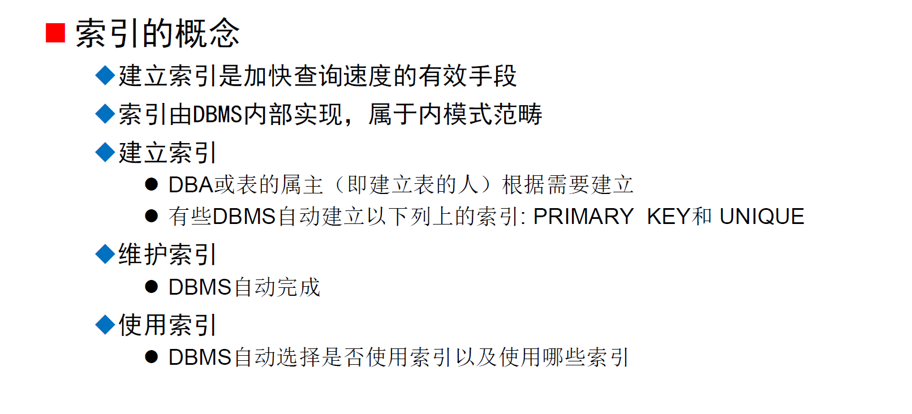
29.2 聚簇索引
- 建立聚簇索引后，基表中数据也需要按指定的聚簇属性值的升序或降序存放。也即聚簇索引的索引项顺序与表中记录的物理顺序一致
- 在一个基本表上最多只能建立一个聚簇索引
- 聚簇索引的用途：对于某些类型(范围查找)的查询，可以提高查询效率
- 聚簇索引的适用范围
- 很少对基表进行增删操作
- 很少对其中的变长列进行修改操作
29.3 非聚簇索引
- 数据存储在一个地方，索引存储在另一个地方，索引带有指针指向数据的存储位置。
- 索引中的项目按索引键值的顺序存储，而表中的信息按另一种顺序存储（也可以由聚簇索引规定）。
- 在搜索数据值时，先对非聚集索引进行搜索，找到数据值在表中的位置，然后从该位置直接检索数据。
- 由于索引包含描述查询所搜索的数据值在表中的精确位置的条目，这使非聚集索引成为精确匹配查询的最佳方法。
29.4 索引分类
-
普通索引
没有什么限制，允许在定义索引的列中插入重复值和空值
-
唯一值索引
唯一索引确保索引列不包含重复的值。在多列唯一索引的情况下，该索引可以确保索引列中每个值组合都是唯一的。
-
主键索引
特殊的唯一索引，不允许为空
-
组合索引
在表中的多个字段组合上创建的索引
29.5 创建索引
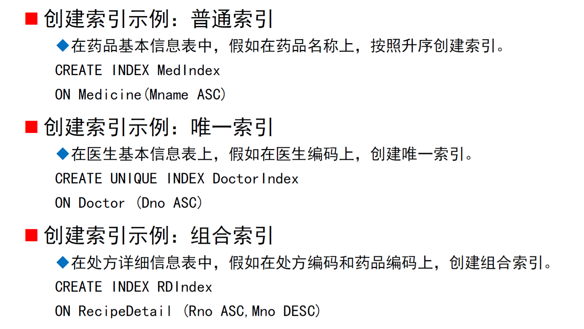
29.6 删除索引
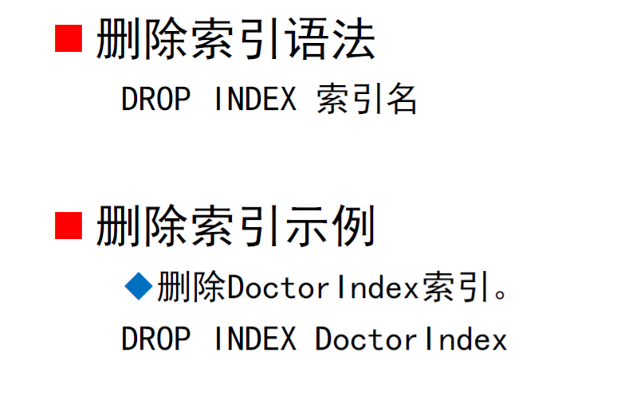
29.7 索引原则
选择数据量较大的表建立索引
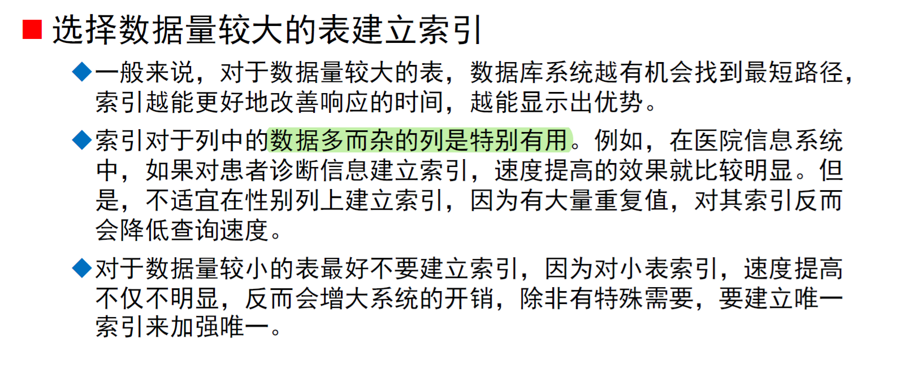
建立索引要适量
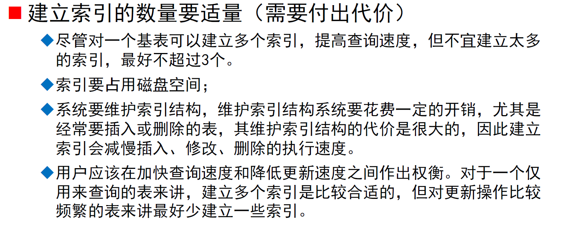
选择合适的时间建立索引&优先考虑主键建立索引
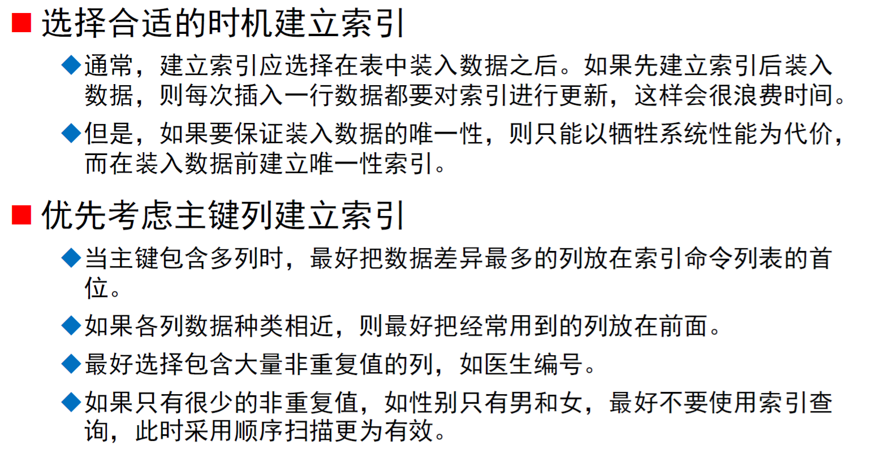
30 完整性约束
- 完整性约束是加在数据库模式上的一个具体条件，它规定什么样的数据能够存储到数据库系统中。
30.1 控制机制
- 完整性约束条件定义机制
- 完整性约束条件：数据模型的组成部分，约束数据库中数据的语义
- DBMS应提供定义数据库完整性约束条件，并把它们作为模式的一部分存入数据库中
- 完整性检查机制
- 检查用户发出的操作请求是否违背了完整性约束条件
- 违约反应
- 如果发现用户的操作请求使数据违背了完整性约束条件，则采取一定的动作来保证数据的完整性
30.2 完整性约束分类
- 主键约束primary key
- 唯一约束uniqe
- 非空约束not null
- 自定义约束check
- 参照完整性约束foreign key
- 断言 assertion
30.2.1 Unique 和 Primary Key
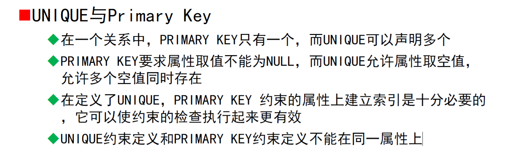
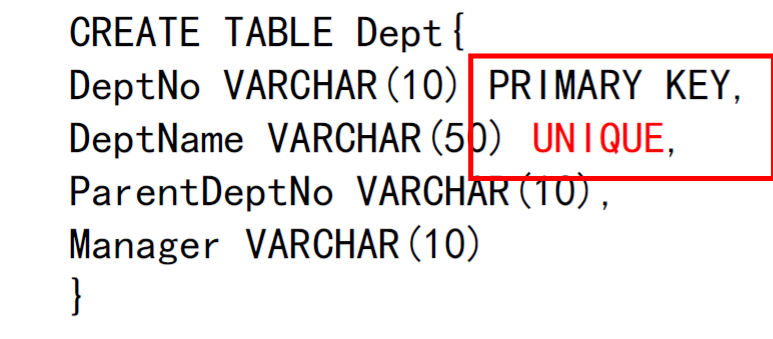
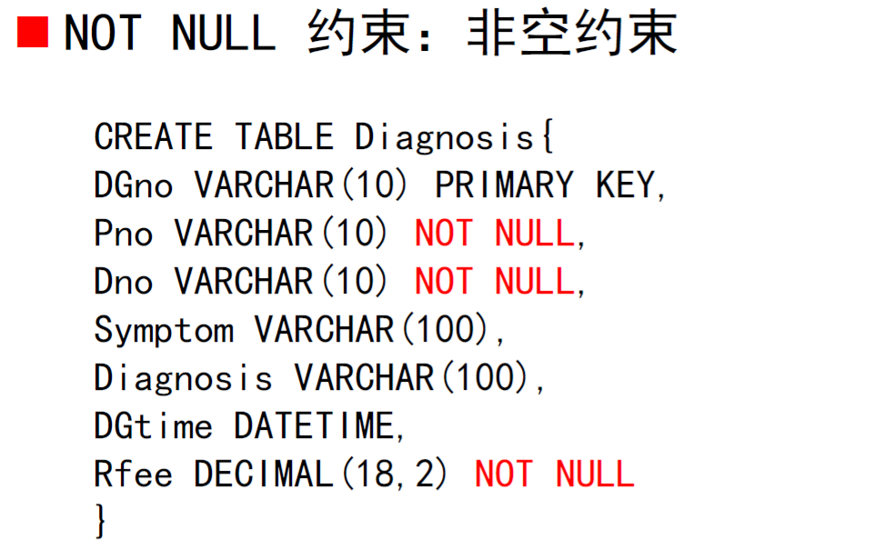
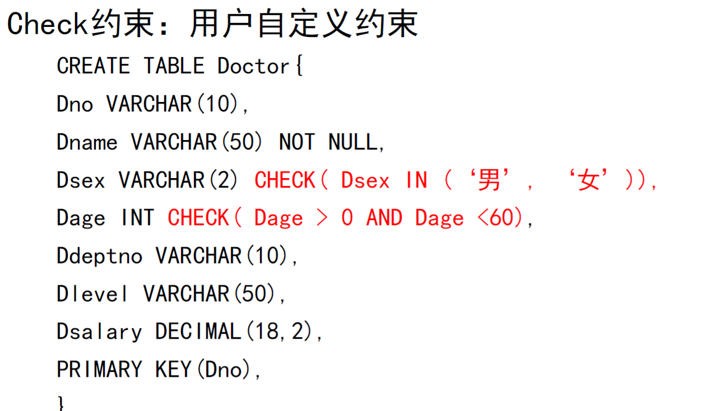
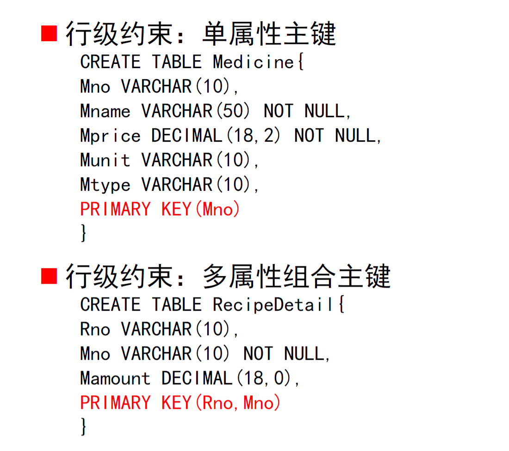
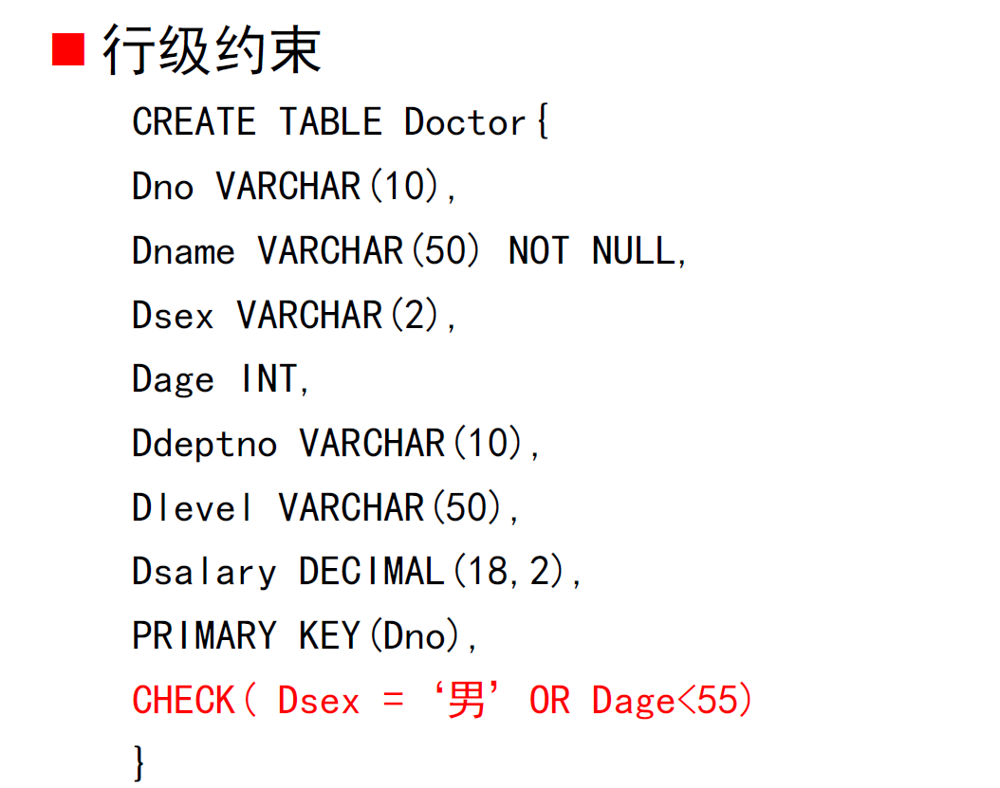
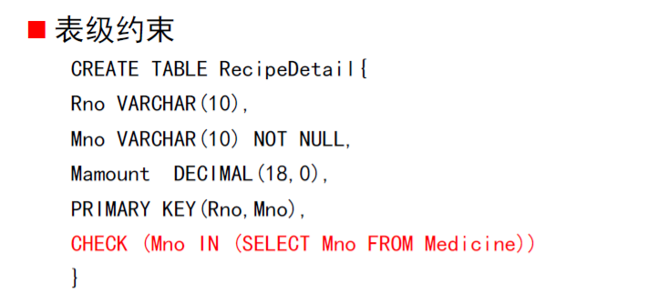
30.3 断言
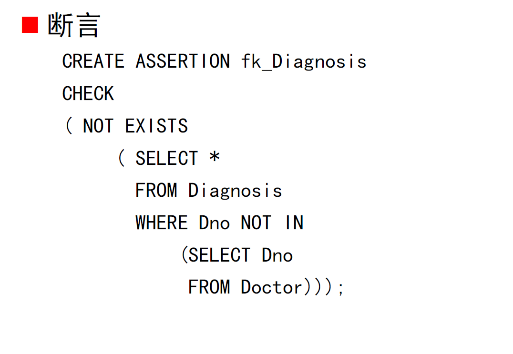
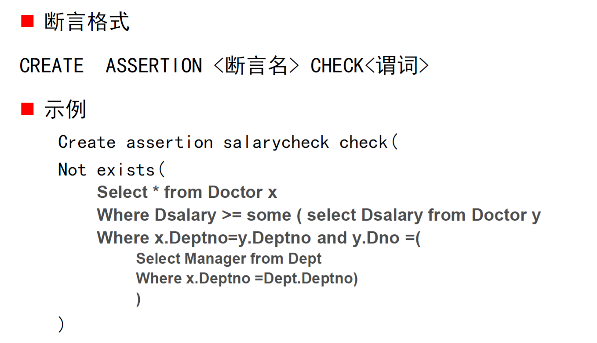
31 参照完整性约束
参照完整性定义
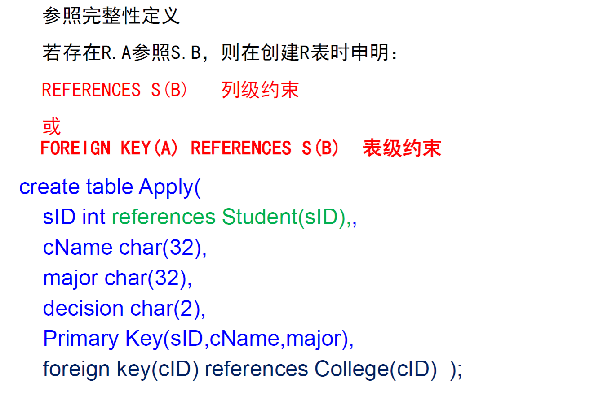
32 数据库安全
33 自主访问控制
34 强制访问控制
35 事务并发
35.1 会出现的问题
- 产生不一致的结果
- 并发执行的错误
- 何时更新数据库
事务时用户定义的一个数据库操作序列，这些操作要么全做要么全不做，是一个不可分割的工作单位。
35.2 事务的特性
原子性，一致性，隔离性，持续性（ACID）
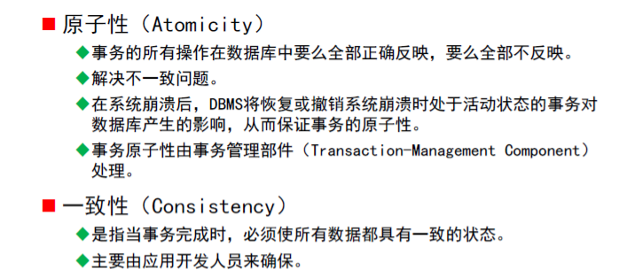
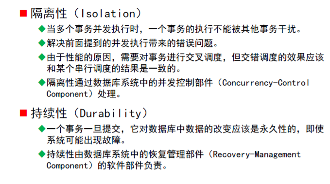
35.3 事务并发
I/O和CPU等可以并行交叉运行
- 改善系统的资源利用率
- 减少短事务的等待时间
35.4 事务并发带来的问题
- 丢失更新
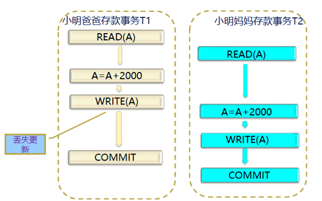
- 读脏数据
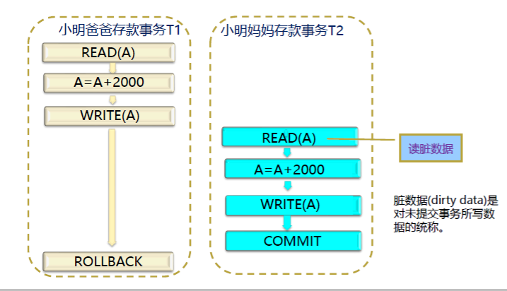
- 不可重复读

- 幻读（和不可重复读比较像但是是表级的）
35.5 事务隔离级别
- 读未提交
- 一个事务可以读取另一个未提交事务的数据。
- 读提交
- 就是一个事务要等另一个事务提交后才能读取数据。
- 重复读
- 在开始读取数据（事务开启）时，不再允许修改操作
- 序列化
- 是最高的事务隔离级别，在该级别下，事务串行化顺序执行。
36 可串行化调度
36.1 串行调度
不同事务的活动在调度中是一个接一个执行的，没有交叉的运行
36.2 可串行化调度
- 调度是可串行化的，多个事务交叉调度的结果与某一个串行调度的结果相同
- DBMS认为事务串行调度的结果标尺了数据库的一致性质，都是正确的。
- 一个调度如果是可串行化的，系统认为其调度是一个调度，保持了数据库的一致性
eg: 并行调度与串行调度结果相同，因此此该调度是可串行的调度。
36.3 指令冲突
- 读相同数据，不冲突
- 读写相同数据，冲突
- 写相同数据，冲突
- 读写不同数据，不冲突
36.4 冲突等价
若调度S中属于不同事务的两条操作指令是不冲突的，则可以交换两条指令的执行顺序，得到一个新的调度S′。称调度S与调度S′冲突等价的（conflict equivalent）。
36.5 冲突可串行化
若一个调度冲突等价于一个串行调度，则该调度是冲突可串行化的。

36.6 视图等价
对同一事务集，如果两个调度S1和S2在任何时候都保证每个事务读取相同的值，写入数据库的最终状态也是一样的，则称调度S1和S2视图等价
36.7 视图可串行化
如果某个调度视图等价于一个串行调度，则称这个调度是视图可串行化的。
如果调度是冲突可串行化的，则该调度一定是视图可串行化的，但反过来未必成立。
判断调度是否是冲突可串行化的，使用前驱图，如果前驱图中存在环，那么调度S是不可串行化的。
36.8 可恢复性
调度S中，事务Ti如果读取了事务Tj修改过的数据，则事务Ti必须等事务Tj提交后才能提交。
37 基于锁的并发控制协议
37.1 封锁
- 指事务在对数据库进行读写操作之前，必须先得到对操作对象的控制权力。
- 先要对将执行读、写操作的数据库对象申请锁，在获得该数据库对象的控制权力后，才能进行相应地读、写操作。
- 封锁是实现数据库并发控制的重要手段。
37.2 锁管理器
- 事务执行过程中锁的申请和释放由DBMS中的锁管理器负责
- 锁管理器维护一张哈希表——锁表
- 对每个数据库对象，如果其上有锁，那么锁表指明持有该锁的事务。
- 锁表包含的信息包括：每个数据库对象上已有的锁的个数、锁的类型以及一个指向申请锁队列的指针。
37.3 锁的类型
- 共享锁（S锁）：如果事务Ti申请到数据项Q 的共享锁，则Ti可以读数据项Q，但不能写Q。
- 排它锁（X锁）：如果事务Ti申请到数据项Q 的排它锁，则Ti可以读数据项Q，也可以写Q。
37.4 锁的相容性质
37.5 增加更新锁

37.6 三级锁
- 一级封锁：修改数据加x锁直到事务结束才释放
- 二级封锁：在以及封锁的基础上，加了一条；T事务在读取数据R之前必须先对其加上S锁，读完释放S锁
- 三级封锁协议：一级封锁协议加上事务T在读取数据R之前必须先对其加S锁，直到事务结束才释放
一级锁解决丢失更新，二级封锁解决读脏数据和丢失更新，三级封锁解决丢失更新，读脏数据，不可重复读。
37.7 两段锁协议
是指所有事务分为两个阶段提出加锁和解锁申请：
- 增长阶段：在对任何数据进行读写操作前，首先申请并获得该数据的封锁。
- 收缩阶段：在释放一个封锁后，事务不再申请和获得其他的任何封锁。
两段锁协议是保证冲突可串行化的充分条件，但该协议不保证不发生死锁。
37.7.1 严格两阶段锁
- 除要求满足两段锁协议规定外，还要求事务的排它锁必须在事务提交之后释放。
- 解决级联回滚问题
37.7.2 强两端锁
- 除要求满足两段锁协议规定外，还要求事务的所有锁都必须在事务提交之后释放。
37.8 两阶段锁总结
- 从两段锁协议到严格两段锁协议，再到强两段锁协议，事务持锁的时间不断增长。这不但保证事务的并发调度是冲突可串行化的，还不断增强了数据库的一致性保证。
- 但带来的另一方面的问题是并发度的降低，以及死锁出现可能性的增加。
- 目前，大多数的DBMS都采用严格两段锁协议或强两段锁协议。
38 数据库恢复技术
38.1 后像后写
事务执行时，后像在事务提交后才写入数据库
恢复过程是忽略未完成的事务，重复已提交的事务。
恢复的过程，就是将提交过事务Ti更新的所有数据项的值设为新的值
38.2 后像前写
后像在事务提交前完全写入数据库
仍然是日志先写的规则
如果事务提交，则<T COMMIT>日志记录必须在事务改变的所有数据项的新值写入到磁盘后再写入稳定的存储器，但应尽快。
事务恢复过程，将事务Ti更新的所有数据项的值设为旧的值。

38.3 后像前后写
被修改数据项写入磁盘的时间可以在日志记录<T，COMMIT>之前进行，也可以放在之后进行。
写入的更新日志记录由４个部分组成。日志记录<T，X，V1，V2>表示：事务Ｔ对数据项Ｘ执行写操作，写前的旧值为V1，写后的新值为V2
仍然遵循日志先写。
38.4 等幂操作
多次执行和一次执行的效果是完全相同的。
38.5 检查点
利用日志进行数据库恢复时，恢复管理器必须检查日志，确定哪些事务需要REDO，哪些事务需要UNDO。一般来说，需要搜索整个日志才能做出决定。
但是搜索整个日志将耗费大量的时间
解决办法是系统定期或不定期地建立检查点（CheckPoint），保存数据库的状态。
38.5.1 提交一致性检查点
就是当前所有事情都完成，并且新的事情不准开始
- 新的事务不能开始直到检查点完成。
- 现有的事务继续执行直到提交或中止，并且相关数据都写入稳定存储器。
- 将当前日志缓冲区中的日志记录写回稳定存储器中的日志文件。
- 将日志记录
<checkpoint>写入稳定存储器。检查点操作完成。
38.5.2 高速缓存一致性检查点
- 新的事务不能开始直到检查点完成。
- 已存在的事务不允许执行新的更新操作，如写缓冲块或写日志记录。
- 将当前日志缓冲区中的日志记录写回稳定存储器中的日志文件。
- 将当前数据缓冲区中的所有数据记录写入磁盘。
- 将日志记录<checkpoint，L>写入稳定存储器，其中L是所有活动事务的列表。
38.6 数据转储
38.6.1静态转储
- 在系统中无运行事务时进行转储
- 转储开始时数据库处于一致性状态
- 转储期间不允许对数据库的任何存取、修改活动
- 优点：实现简单
- 缺点：降低了数据库的可用性
- 转储必须等用户事务结束
- 新的事务必须等转储结束
38.6.2 动态转储
- 转储操作与用户事务并发进行
- 转储期间允许对数据库进行存取或修改
- 优点
- 不用等待正在运行的用户事务结束
- 不会影响新事务的运行
- 缺点
- 不能保证副本中的数据正确有效
- 利用动态转储得到的副本进行故障恢复
- 需要把动态转储期间各事务对数据库的修改活动登记下来，建立日志文件
- 后备副本加上日志文件才能把数据库恢复到某一时刻的正确状态
38.6.3 完全转储
每次转储全部数据库
38.6.4 增量转储
只转储上次转储后更新过的数据
38.6.5 完全转储和增量转储的对比
- 从恢复角度看，使用完全转储得到的后备副本进行恢复往往更方便
- 但如果数据库很大，事务处理又十分频繁，则增量转储方式更实用更有效
39 故障种类及恢复策略
39.1 故障分类
- 事务故障
-
系统故障
包括硬件故障、数据库软件或操作系统的漏洞造成的系统停止运转。它导致系统易失性存储器中的内容丢失，事务处理停止，但非易失性存储器中的内容不会受到破坏。
-
介质故障
- 在数据传送操作过程中由于磁头损坏或故障造成磁盘块上的内容丢失。
- 需使用其他非易失性存储器上的数据库后备副本进行故障的恢复。
39.2 故障恢复
- 事务故障的恢复：利用日志文件撤销此事务对数据库已经进行做过的修改。（见前面）
- 系统故障的恢复：利用日志文件回滚（ UNDO ）未完成事务，重做（ REDO ）已提交事务。

后像前写，后像后写，后像前后写的规则同上面说的规则一样。
- 介质故障的恢复
- 装入最近的完全转储后备副本。
- 若数据库副本是动态转储的，还需要同时装入转储开始时刻的日志文件副本，利用恢复系统故障的方法将数据库恢复到某个一致性状态。
- 如果有后续的增量转储，按照从前往后的顺序，根据增量转储来修改数据库。
- 装入转储结束后的日志文件副本，重做已完成的事务。
- 首先反向扫描日志文件，找出故障发生时已经提交的事务，将事务标识符写入 redo list 。
- 然后正向扫描日志文件，对 redo list 中的所有事务进行 redo 操作。
- 装入最近的完全转储后备副本。
 wechat
wechat alipay
alipay